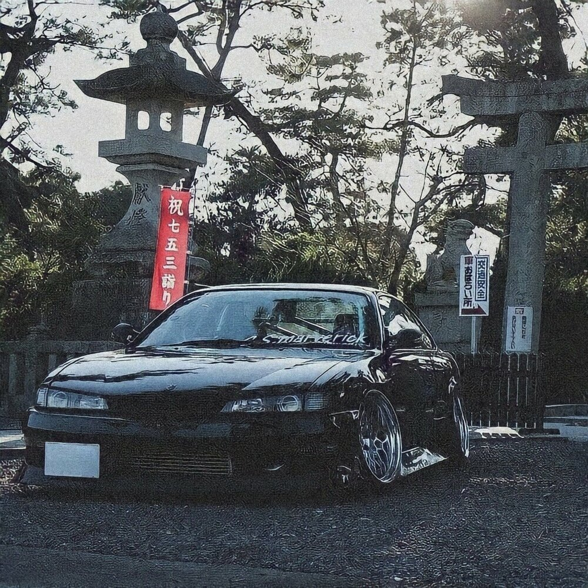

ILGIZ SANDYBAEV


YAPONKA
Первый Skyline с заводским обозначением ALSI-1 сходил с конвейера с 1957 по 1963 под маркой Prince и по меркам Японии считался роскошным автомобилем. Всего было продано 33 759 экземпляров, в основном — с кузовами седан и универсал.
Автомобиль, представленный 24 апреля 1957 года, построила компания Prince Motor Company, основанная на базе производившей военные самолёты Tachikawa Aircraft Company в 1952 году и названная в честь японского наследного принца Акихито. Skyline первого поколения был построен на базе коммерческого автомобиля Prince Skyway.
Автомобиль имел откровенно «проамериканский» дизайн, оснащался изначально двигателем GA-30 объёмом 1,5 л (1482 см³) и мощностью 60 л. с. (44 кВт), весил около 1300 кг и разгонялся до максимальной скорости порядка 140 км/ч. Конструктивно он был достаточно простым, например зависимая задняя подвеска была типа «Де Дион» — с соединяющей задние колёса лёгкой балкой и неподвижно закреплённым редуктором главной передачи.
 BMW
BMW является аббревиатурой названия Bayerische Motoren Werke AG (с нем. — «Баварские моторные заводы»), хотя в последнем по правилам немецкого языка Motorenwerke должно писаться слитно[8].
По-русски название «BMW» произносится «бэ-эм-вэ́», что близко к немецкому произношению; изредка встречается написание «БМВ». Существует также несколько «неофициальных» названий: из англоязычного произношения аббревиатуры «би-эм-дабл-ю» для мотоциклов фирмы исторически сложилось название «бимер» (англ. beemer), для автомобилей — похожее, но не равнозначное «биммер» (англ. bimmer)[9]. В России для обозначения марки могут также применяться названия «бэха», «биммер», «бумер»[10], в Греции — «beba», в арабских странах — «BM»[11]. Автомобили также могут называться соответственно их серии, например для 5-й серии — «пятёрка» (нем. Fünfer).
В логотипе компании чёрное кольцо было заимствовано от логотипа завода авиационных моторов Раппа. Белые и голубые сектора указывают на флаг и герб Баварии, в свою очередь основанных на гербе рода Виттельсбахов, правивших Баварией с конца XII по начало XX века[12
BMW
BMW является аббревиатурой названия Bayerische Motoren Werke AG (с нем. — «Баварские моторные заводы»), хотя в последнем по правилам немецкого языка Motorenwerke должно писаться слитно[8].
По-русски название «BMW» произносится «бэ-эм-вэ́», что близко к немецкому произношению; изредка встречается написание «БМВ». Существует также несколько «неофициальных» названий: из англоязычного произношения аббревиатуры «би-эм-дабл-ю» для мотоциклов фирмы исторически сложилось название «бимер» (англ. beemer), для автомобилей — похожее, но не равнозначное «биммер» (англ. bimmer)[9]. В России для обозначения марки могут также применяться названия «бэха», «биммер», «бумер»[10], в Греции — «beba», в арабских странах — «BM»[11]. Автомобили также могут называться соответственно их серии, например для 5-й серии — «пятёрка» (нем. Fünfer).
В логотипе компании чёрное кольцо было заимствовано от логотипа завода авиационных моторов Раппа. Белые и голубые сектора указывают на флаг и герб Баварии, в свою очередь основанных на гербе рода Виттельсбахов, правивших Баварией с конца XII по начало XX века[12
CLS 63
Mercedes-Benz C219 — четырёхдверное купе, первое поколение CLS-класса, основанное на концепт-каре Mercedes-Benz Vision CLS, представленного на автосалоне во Франкфурте в 2003 году. Сконструирован на базе W211 Е-класса. Автомобиль выпускается на заводах в Зиндельфингене в Германии[4].
В 2004 году на автовыставке в Нью-Йорке и Болонье дебютировала модель CLS 500. С осени того же года модель поступила в серийное производство[5]. Флагманской версией серии стала модель CLS 55 AMG, представленная вместе с обычной модификацией. В 2006 году произошёл пересмотр модельного ряда двигателей. Бензиновый V6 агрегат оснастили технологией непосредственного впрыска топлива. Обновился двигатель флагманской модели от подразделения Mercedes-AMG. В 2008 году автомобиль потерпел очень небольшую модернизацию, входе которой изменился вид решётки радиатора, появились светодиодные задние фонари, другие зеркала заднего вида со светодиодными повторителями «поворотников», а также колёсные диски нового дизайна и другие патрубки выпускной системы[6]. В 2009 году были проведены последние изменения, которые затронули лишь наименования моделей.
27 июля 2010 года с конвейера сошёл последний автомобиль первого поколения[7]. За 6 лет производства C219 модели было выпущено более 170.000 копий автомобиля[7].